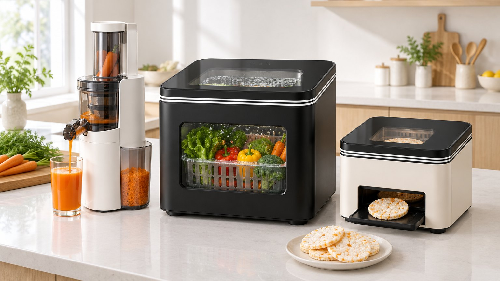
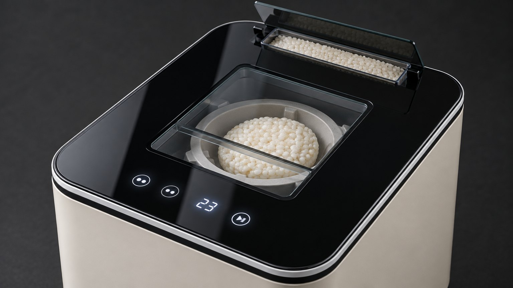

04 · 디자인
휴롬 식재료 세척기와 같은 식구.
옆면 색만 고릅니다.
세척기의 언어를 그대로 가져왔습니다 — 네모 큐브, 검은 강화유리 상판, 가운데 들여다보는 창, 유리 아래 얇은 흰 띠, 꺼지면 사라지는 터치와 숫자. 가열 제품인데도 금속과 열선은 밖에서 하나도 보이지 않습니다.

원액기 · 세척기 · 간식 메이커 한 세트 · 실사 컨셉(AI 생성). 크기만 작고(약 22 × 22 × 20cm) 언어는 같습니다.

앞 45° · 검은 유리 상판의 창으로 떡뻥이 부푸는 게 보입니다. 앞 슬롯은 가림판 뒤, 그 아래 부스러기 서랍.

상판 · 이중 유리 창 + 유리 아래 터치(모드 ① ② · 시작)와 두 자리 숫자(예열 남은 초 · 만든 장수). 뒤쪽 작은 유리 덮개 아래 곡물 카세트.

비스포크 · 옆면 패널을 갈아 끼웁니다. 기본 블랙 · 화이트, 아이 간식 기계답게 크림 · 세이지 · 라벤더. 3D 칸에서 색을 바꿔 볼 수 있습니다.
형태세척기와 같은 큐브
약 22 × 22 × 20cm. 나란히 두면 한 세트로 보이는 크기 비율.
상판검은 강화유리 + 이중 유리 창
창으로 떡뻥이 부푸는 10초가 보입니다. 창은 이중 유리라 만져도 따뜻한 정도.
띠 · 터치흰 띠, 숨은 터치
유리 아래 터치 3개(모드 ① ② · 시작)와 숫자 2자리. 꺼지면 매끈한 유리판만 남습니다.
불빛따뜻한 점 → 흰 점
예열 중 따뜻한 색, 완료되면 흰색. 빨간 경고등 느낌은 쓰지 않습니다.